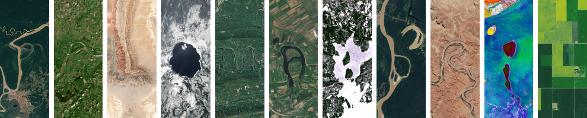
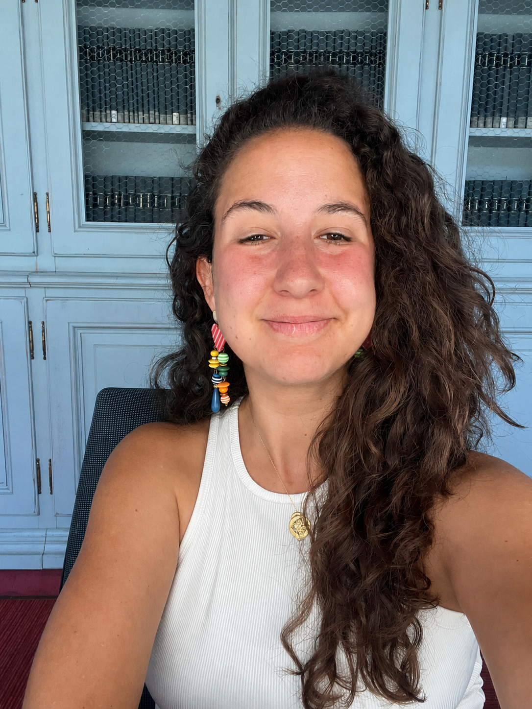

PhD Candidate
European University Institute
Florence
Paloma Abril
Poncela
I study how environmental damage, climate change, and natural resource extraction shape voting behavior, protest, and political mobilization.
My research focuses especially on the trade-off between environmental concerns and economic interests for voters and elites.
I am a third-year PhD candidate at the European University Institute in Florence, supervised by Professor Miriam Golden and Professor Elias Dinas. My research focuses on the effects of environmental damage and climate change on voting behavior in Latin America, particularly the trade-off between environmental concerns and economic interests for both voters and elites.
In addition to my research, I teach Basic Statistics and Mathematics, and practical classes on Game Theory at the School of Transnational Governance in Florence, and Applied Causal Inference at the University of Lucerne.
I also collaborate with the NGOs Alianza por la Solidaridad and ActionAid on projects focused on climate justice. My work with them includes contributing to policy analysis, leading educational sessions on climate justice for high school and undergraduate students, and participating in public events and forums, such as sessions at the European Commission and UN climate conferences.

Research
My projects study environmental voting, extraction, deforestation, indigenous mobilization, and climate politics.
Economic vulnerability and emotions toward climate change: A case study of Spain
Fernandez, J. J., Orriols, L., & Abril, P. (2025). Journal of Environmental Psychology, 102537.
Read article
México
2024-26
Under review
From Economic Voting to Environmental Backlash: The Mayan Train and Electoral Dynamics in México
Author: Paloma Abril Poncela
How do voters evaluate governments that deliver economic growth at environmental cost? Classic models of retrospective voting expect citizens to reward prosperity, yet development often comes at the expense of the environment, generating backlash. I argue that accountability under these trade-offs hinges on whether citizens directly capture the gains from growth.
When benefits are diffuse and environmental losses are visible and concentrated, voters punish governments; when benefits are direct and compensatory, they reward them even amid ecológical damage. I test this argument using México's Mayan Train, a macro-project that spurred regional expansion alongside severe deforestation. Combining satellite, firm, and electoral data in a difference-in-differences framework, I show that voters rewarded growth without deforestation, punished growth with ecológical destruction, and rewarded the government where expropriation payments provided direct compensation.
Presented at: EPSA 2025, POBI 2025
Electoral sections along the Mayan Train
Click an electoral section to display its measured deforestation and the satellite comparison.
Source: electoral-section shapefiles and satellite-based deforestation calculations.
Select a section
Results
Proximity to the Mayan Train had opposite electoral consequences across the route. In the first half, sections closer to the line experienced larger increases in MORENA's vote share after construction, consistent with economic voting: moving from 10 km away to immediate proximity corresponds to an estimated increase of about 1.7 percentage points, and 4.2 percentage points in the matched model. In the second half, proximity is associated with lower support for MORENA, with nearby communities penalizing the incumbent by roughly 3-4 percentage points. The opposition-party results indicate that PAN gained vote share in the second half, while PRI effects are not statistically significant and PVEM gains did not offset MORENA's losses once coalition totals are considered.
The mechanism figures point to why the two halves diverged. New firm creation is associated with higher support for MORENA in the first half, but not in the second half, suggesting that localized economic activation mattered where environmental costs were less politically salient. By contrast, exposure to deforestation is associated with lower support for the incumbent, especially where forest loss was visible and widespread; one square kilometer of deforestation corresponds to almost a one-point loss in vote share. Sections where communal lands were expropriated show increased support for MORENA, consistent with the argument that direct compensation can turn project exposure into electoral reward even amid broader environmental damage.
Ecuador
2023 referendum
with Sara Dybesland & Deniz Tufur
When Oil Meets the Environment: How Gender Shapes Environmental Voting in Ecuador
Authors: Paloma Abril Poncela, Sara Dybesland and Deniz Tufur
This paper analyzes how local economic structures condition gender differences in environmental voting. Using Ecuador's 2023 national referendum on halting oil extraction in Yasuní National Park, where men and women vote in separate booths enabling the first systematic analysis of gendered environmental behavior using real voting data, we examine when and why gender predispositions translate into distinct electoral choices. Using official booth-level results and a difference-in-differences design, we find that women are significantly more likely than men to support halting oil extraction in areas where local economies are not tied to oil. In oil-producing regions, this gender gap disappears entirely: material dependence on the industry overrides value-based differences for both men and women. Additional analyses of public goods provision and employment confirm that extractive activities influence political behavior through concrete economic channels rather than shifts in attitudes alone.
To further probe the individual-level mechanisms behind these patterns, we complement the electoral analysis with an original survey fielded in Ecuador. These findings contribute to electoral behavior theory by showing that gender gaps in environmental voting are not fixed properties of individuals, but conditional outcomes shaped by local economic context. More broadly, they help explain why cross-national studies often find weaker gender gaps in the Global South, and clarify when material interests displace values as the dominant driver of political choice.
Yasuni referendum maps
Choose a layer and click a parroquia to see the 2023 Yes vote, male and female Yes vote shares, and the gender gap.
Layer: percentage of Yes vote in the 2023 Yasuni referendum by parroquia.
Gender gap by oil status
Adjusted Male - Female gap in percentage-point Yes support. Negative values mean women were more likely than men to vote Yes.
Theory Building Through Scope Conditions Decision Tree: An Application on Elections and Deforestation
With Rens Chazottes. Social scientists routinely produce credibly identified causal estimates, yet struggle to aggregate them into cumulative theory. We propose a framework that formalizes each theoretical claim as a structured proposition linking a treatment contrast, an outcome, a causal mechanism, and a set of scope conditions, then organizes these claims into scope-condition decision trees.
We apply the framework to a pre-registered systematic review of elections and deforestation, a literature marked by theoretical fragmentation and competing predictions. The analysis shows that many apparent disagreements reflect differences in implicit scope conditions rather than genuine empirical contradictions, and identifies several plausible causal regimes that remain empirically underexplored.
Environmental Mobilization of the Indigenous in Latin America
Why are indigenous populations more likely to mobilize for environmental causes than their non-indigenous counterparts? This paper examines two competing explanations: material interests and environmental values. Using survey evidence from Latin America and protest event data, I show that indigenous identity is consistently associated with higher levels of environmental concern and a greater willingness to engage in climate-related protest. I argue that this pattern can be understood through the joint influence of material grievances, linked to disproportionate exposure to environmental harm, and deeply rooted environmental values tied to identity and relational conceptions of nature.
To disentangle these mechanisms, I combine observational analysis with experimental evidence. The study ultimately tests whether mobilization is primarily driven by threats to livelihoods or by threats to environmental values. The empirical strategy culminates in a survey experiment conducted in Ecuador, where participants are randomly exposed to material or value-based frames of environmental harm. This design allows for the identification of the causal impact of each mechanism on individuals' willingness to protest, providing new evidence on the drivers of environmental mobilization in the Global South.
Green Voting without a Green Party
With Lluis Orriols. Presented at APSA 2024. A conjoint experiment on how voters weigh environmental positions against other political issues in Spain.
Teaching
European University Institute / School of Transnational Governance
Basic Statistics and Mathematics; practical classes on Game Theory.
University of Lucerne
Applied Causal Inference.